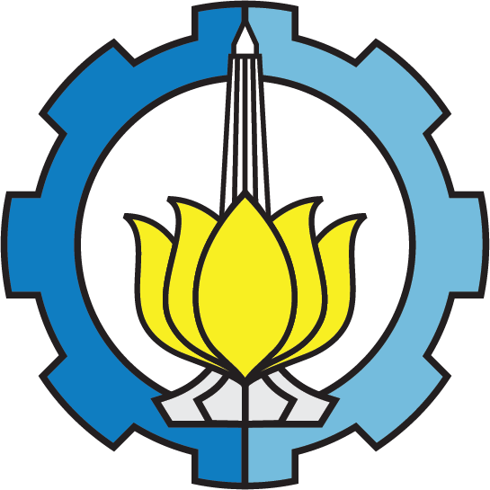
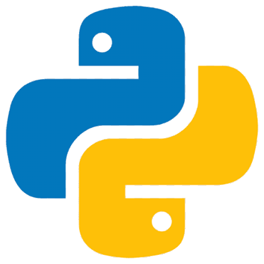
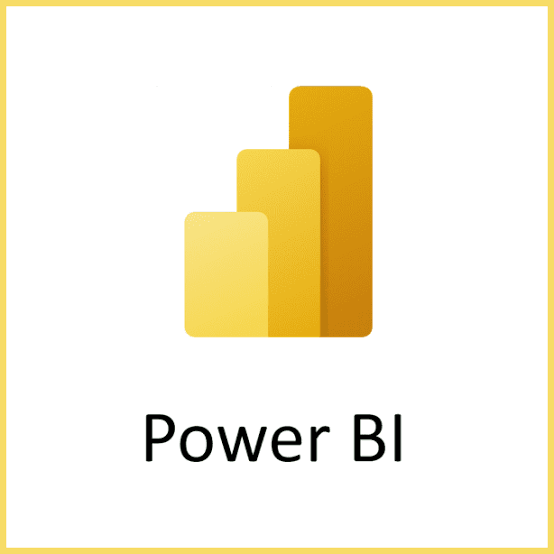
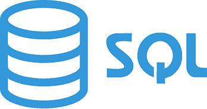
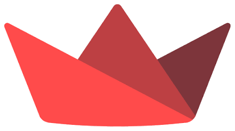
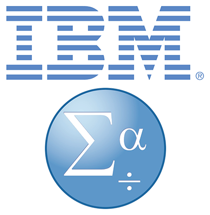

Data Analytics
Data exploration, statistical analysis, and dashboards to communicate insights clearly.
DATA ANALYTICS / STATISTICS / BUSINESS
I’m M. Rizal Matofani, a Business Statistics student at ITS exploring statistical analysis, data visualization, and data-informed decisions for business and operations.
Institut Teknologi Sepuluh Nopember · Department of Business Statistics

Institut TeknologiTHE PERSON BEHIND THE NUMBERS
I'm a Business Statistics student at Institut Teknologi Sepuluh Nopember (ITS), exploring how statistical methods, computing, and business thinking can support better decisions.
My academic work covers databases, quality control, inventory planning, data visualization, and applied machine learning. Beyond the classroom, I've developed coordination, administration, and team leadership skills through an internship and student organizations.
Core knowledge from academic projects and experience collaborating in student organizations.
Data exploration, statistical analysis, and dashboards to communicate insights clearly.
Turning datasets into readable, interactive reports and visual stories.
Academic exposure to inventory planning, distribution systems, and statistical quality control.
Hands-on experience with recruitment administration, fundraising, communication, and activity planning.
DATA TOOLS & SOFTWARE
Software I have used for statistical analysis, programming, visualization, and reporting.

Programming & data analysis
Statistical computing

Business intelligence & dashboards
Data visualization

Database management

Interactive data applications

Statistical analysis
Statistical quality control
FROM CLASSROOM TO APPLICATION
These are academic project summaries from my CV. Supporting code, dashboards, or reports can be added when available.
Evaluated distribution systems and inventory planning as part of an academic supply chain project.
Processed data and created dashboards using Power BI and Tableau.
Analyzed production process quality using statistical control charts.
Designed databases and processed structured data using SQL.
Built a machine-learning-based loan approval prediction dashboard using a Kaggle dataset.
Analyzed financial statements and ratios to evaluate company financial performance.
Analyzed stock risks and returns and developed an investment portfolio.
Applied survival analysis to heart failure cases using a dataset from Kaggle.
Analyzed sentiment around rising aviation fuel prices using data from X and Google News articles.
Analyzed business risks for telecommunications companies: Telkom, Indosat, and XL.
Practical administration, team coordination, communication, and fundraising activities.
Oro-Oro Ombo Village Government Office
Technopreneurship Development Center ITS
INI LHO ITS — FORDA Nganjuk
ADDITIONAL COMMITTEE EXPERIENCE
Experience in procurement, merchandise sales, inventory tracking, and revenue monitoring.
Merchandise procurement, inventory and revenue tracking.
Sales coordination and fundraising performance evaluation.
Fundraising strategy, sales coordination, and revenue reporting.
A multidisciplinary path connecting technical studies with statistics, business, and computing.
Business Statistics
Surabaya, IndonesiaLight Vehicle Automotive Engineering
Nganjuk, IndonesiaFeel free to reach out about internships, project collaborations, or professional opportunities.